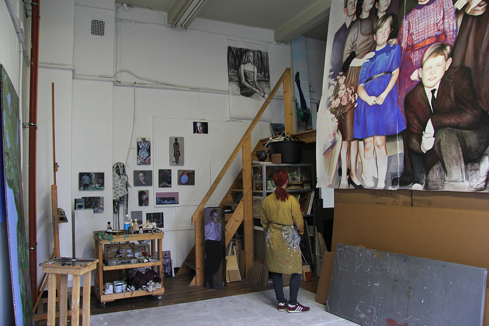

Over Monique Broekman
C.V.
English
Het werk van Monique Broekman als schilder verhoudt zich meestentijds tot de publieke ruimte in de ruime zin van het woord. Met haar metier onderzoekt zij de historie van een plek om de actualiteit binnen de tijd te leren begrijpen. Zij maakt het heden los van het verleden en legt het er als een laag overheen. Of zij vergroot het heden waarin het verleden op een andere manier een plek krijgt.
Haar projecten in de openbare ruimte markeren de tijd, benadrukken deze, om ruimte te maken voor contemplatie of een andere, nieuwe manier van kijken en beleven. Gesprekken, opgenomen of genoteerd, vormen een onderdeel en extra laag of voorschets van een werk. Zij streeft in het uiteindelijke werk naar een autonoom visueel beeld. Een onderzoek, voortkomend uit een vraagstelling resulteert uiteindelijk in een beeld, dat zich heeft losgemaakt van de actualiteit, maar er wel zijn directe oorsprong heeft.
In haar monumentale groepsportretten brengt zij individuen samen die in een bepaalde periode een gemeenschappelijke deler hebben doordat ze door omstandigheden dezelfde ruimte delen of zich in eenzelfde situatie bevinden. Het is een verbeelde, uitvergrote tijdsopname die later in de tijd totaal veranderd kan zijn. Monique is geïnteresseerd in deze veranderingsprocessen, hoe verschillende individuen op elkaar reageren en elkaar beïnvloeden, in een bepaalde periode samen een (mini-) maatschappij vormen en uiteindelijk het uiterlijk van haar beeldende werk beïnvloeden, doordat zij er d.m.v. hun portret in figureren.
Met haar werk tracht Monique grip op de veranderende tijd te krijgen, en vertraagt zij deze door soms meer dan levensgroot in te zoomen op haar onderwerp. Zij maakt als een spiegel (enigszins vervreemdend vervormend) haar intieme en maatschappelijke omgeving onderdeel van haar beeldende werk in een poging te komen tot communicatie en inzicht. De beeldende middelen filteren haar oorspronkelijke ideeën om te komen tot een geslaagd beeld dat niet eenduidig is en als nieuwe beleving blijft bestaan in de herinnering.

Foto: André Smits/Artistsintheworld
About Monique Broekman
My interventions in public space are mostly of a temporary nature and mark the time, emphasizing it to make room for contemplation or another, new view and experience. Conversations, recorded or noted down, add an element and provide an extra layer to the work. In the final work I aim for the creation of an autonomous visual image. An investigation, with a question as starting point, will eventually results in an image which is detached from actuality, but still originates from it. In my monumental group portraits I bring individuals together who over time have a common denominator because they share the same space or are in similar situations. It is an imagined, enlarged still image of a moment in time which later on can change completely. I am interested in such change processes, how different individuals interact and influence each other, and temporarily constitute a (mini) society and thus eventually have an impact on the appearance of my visual work, because their portraits become parts of it. In my work I try to get a grip on the elusive, changing time, slowing it down by zooming in on the subject, presenting it as larger than life. Like a somewhat dissociative and distorting mirror, my intimate and social environment becomes a component of my work, in an attempt to communicate and create insight. The visual means filter the orignial ideas to arrive at an ambiguous, layered image which, as a new experience, will continue to exist in memory.
Curriculum Vitae English (short version)
M.M. Broekman
23-03-1967
Kanaalstraat 10
5211 PJ ‘s-Hertogenbosch
Tel.:073-6122489/06-22181370
e-mail: info@moniquebroekman.nl
website: moniquebroekman.created.today
opleiding: Akademie voor Kunst en Vormgeving Den Bosch, schilderen/grafiek, 1984-1990
Tentoonstellingen
2025 Vastenavondkampmuseum, Blerick/Venlo (solo)
2025 Zeven deuren, reizende videoinstallatie, Erfgoed 's-Hertogenbosch, Groot Tuighuis, Den Bosch (solo)
2024 Kunstenfestival Watou (B)
2024 Limburg Biënnale, Maastricht
2024 Presentatie Verhalenproject Innovatiekwartier in opdracht van de gemeente Den Bosch
2023 Nova Zembla Binnenste Buiten, Werkwarenhuis, Den Bosch (groep)
2023 Open atelierroute Den Bosch
2023 LAM museum in Lisse, videopresentatie
2023 ZOOKEEPER, presentatie AIR, Emmen
2022/23 vdhp-videobiennale, Amsterdam (groep)
2022 Wat Blijft, Koetshuis, Noordbrabants Museum, Den Bosch (solo)
2022 Dat Wat Blijft, Museum Jan Heestershuis (solo), Schijndel
2022 Dat Wat Blijft, interactieve multidisciplinaire tentoonstelling in binnenvaartschip i.s.m. Museum W/Neeroeteren (B)/Luik, Musée de la Vie Wallonne (B)/Veghel, Phoenix Cultuur en Fabriek Magnifique/Noord Brabants Museum, Den Bosch
2021 Dat Wat Blijft, Veghel/Helmond/Maastricht i.s.m. De Cacaofabriek, Noordkade Veghel/Phoenix Cultuur, Lumiere cinema
2020 Chassé galerie, Breda (solo)
2020 'Hey Joe tell us a story!', Willem Twee Kunstruimte (groep)
2019 Dat Wat Blijft, op Tjalk De Vertrouwen, Zuid-Willemsvaart 's-Hertogenbosch
2019 Kunsttraject, Boezelaarstraat, A'dam (trio)
2019 Microgalerie (solo), Nova Zembla, 's-Hertogenbosch
2018 This art fair, Beurs van Berlage, A'dam i.s.m. Jan van Hees
2018 open ateliers, Nova Zembla, sint-Josephstraat 20, Den Bosch
2018 Verkadefabriek Den Bosch, Bossche filmers, filmvertoning Museum Van de Onschuld (groep)
2018 Museum Slager, 's-Hertogenbosch (solo)
2017 This art fair, Beurs van Berlage, A'dam. Installatie, i.s.m. Jan van Hees
2017/2018 VDHP-video biënnale, december, Amsterdam (groep)
2017 Kunstnacht Nova Zembla,30 september, 's-Hertogenbosch (groep)
2016/2017 'In staat van tussentijd',participatieproject, installatie in sluishuis; fotografie/geluid/licht, 's-Hertogenbosch
2016 'De gerichte blik', W2Fabriek, 's-Hertogenbosch (trio)
2016 Portret koning Willem-Alexander, Oranjegalerij, stadhuis 's-Hertogenbosch
2015 'Reïnventing paradise', Stedelijk museum 's-Hertogenbosch (groep)
2015 'Picknick in het bos, het woud der verwachting', installatie/interactief project, kunstencluster W2Fabriek, 's-Hertogenbosch (solo)
2014 'A one night stand', De Kruisruimte, Eindhoven (groep)
2014 'De Firma Broekman serveert- tussendoortjes- In Tussentijd', Stedelijk Museum 's-Hertogenbosch, performance/installatie/boekpresentatie (solo)
2014 'De Firma Broekman bij architectenbureau De Twee Snoeken', tentoonstelling en performance, s-Hertogenbosch (solo)
2013 Tilly Tell, performance/gefilmde interviews Fairfest, Tilburg
2013 My Home, eindpresentatie 'Ora et Labora', Zaandam (groep)
2012 ‘Het Behouden Huys’, jubileumproject Nova Zembla, Den Bosch (groep)
2011/2012 ‘De Metaal’, De Aleph, centrum voor de kunsten, Drunen/gemeente Heusden (solo)
2011 Dutch design week, i.s.m. S. v. Bakel, Eindhoven (groeps)
2011 Zomerexpo, Haags Gemeentemuseum, Den Haag (groeps)
2011 “Six degrees of seperation”, CBK, ‘s –Hertogenbosch (groeps)
2011 Kasteel Heeswijk, Heeswijk-Dinther, De Mobiele Toeristeninformatie(solo)
2011 Kunstnacht, Nova Zembla, ’s-Hertogenbosch (groeps)
2010 “Elders”, Sint-Michielsgestel, Noord-Brabant (groeps)
2010 Microgalerie, Nova Zembla, Den Bosch (solo)
2010 Zinnen Beelden Viermomenten, Protestante kerk in Boxtel, i.s.m. dichter Viktor Vroomkoning (duo)
2009 ZIN, het klooster voor zingeving en werk, Vught (solo)
2009/10 Wenswerken, Krabbedans, Eindhoven (groeps)
2008/9 Musée des Arts Decoratifs, Parijs, Frankrijk (groeps)
2008 Bernardaud Foundation, Limoge, Frankrijk (groeps)
2008 Anno Hier (over kunst in de openbare ruimte met Jeanne van Heeswijk, Loek Grootjans, Sjaak langenberg, Hans
venhuizen en Onno Dirker/Atelier Veldwerk.) CBK, ’s-Hertogenbosch (groeps)
2007 SBK A’dam (solo)
2007 Slagerij Het Pelske, (project ‘Eigen Bezit; een tijdsbeeld) ’s-Hertogenbosch (solo)
2007 “To be continued”, De Nederlandse Cacaofabriek, Helmond (groeps)
2007 Expositie (met Simone van Bakel en Nicolas Dings) , Galerie Jan van Hoof, ’s-Hertogenbosch (groeps)
2007 “Pretty Dutch”, museum het Prinsessehof, Leeuwarden (groeps)
2006 “Kunst in mijn buurt”, in het kader van “De vrede van Utrecht”, Stefanuskerk, Utrecht (groeps-)
2006 “Onder Anderen”, NBKS, Breda (met Cécile Verwaaijen Anouk Bax) (groeps-)
2006 Galerie HUZ, De Dames van de BroBa, Winterswijk (duo)
2006 Goricums Museum, “Aan tafel”, Goricum (groeps-)
2006 “Feest van de Geest”, Abdij Heeswijk (Installatie in de abdijkerk van Berne,) (solo)
2005 Nieuw werk, SBK, Amsterdam (solo)
2005 “Sense”, stichting Expozee, in de N.H. Kapel te Noordwijk (duo met Simone van Bakel)
2005 “Gunda 2” (installatie), Kunstcamping, Bernheze (groeps-)
2005 “De dames van de BroBa. Aflevering1: Tafelgesprekken”, Glasmuseum, Leerdam (duo met Simone van Bakel)
2005 “De vesting als korset”, kunstmanifestatie in de openbare ruimte van Den Bosch (groeps-)
2004 “De Macht”, Nieuwspoort, Den Haag (solo)
2004 “7 maal solo”, Noord-Brabants museum, Den Bosch (solo)
2004 “De Kamer”, Tweede Kamergebouw, Den Haag (solo)
2004 Kunstuitleen Utrecht (groeps-)
2003 ‘Nieuwe aanwinsten’, Kunstuitleen Utrecht (groeps-)
2003 ‘Broos’, i.s.m. Simone van Bakel, CBK Drenthe, Emmen (duo)
2003 ‘Multiples’, Germinahof, Sterksel (groeps-)
2003 ‘Zon en Zee’, Grafisch atelier Den Bosch (solo)
2002 ‘Valsmunterij’, Grafisch atelier, Utrecht (groeps-)
2000 ‘Accrochage’, The Living Room, Amsterdam (groeps-)
2000 ‘En leidt ons in bekoring’, galerie Peninsula, Eindhoven
2000 De Nederlandse Cacaofabriek, i.s.m. Ingrid Simons, Helmond (groeps-)
2000/2001 ‘Op de huid bekeken’, Tramremise, SBK Amsterdam (groeps-)
2000 ‘Despues de la tormenta’, The Living Room, A’dam (solo)
1998 ‘Beperkt houdbaar’, Pictura, Dordrecht
1998 ‘Different places, different faces’, galerie Witteveen, Amsterdam (groeps-)
1998 Kunstrai, The Living Room, Amsterdam (groeps-)
1998 Stadsschouwburg Eindhoven op uitnodiging van Peninsula (solo)
1998 ‘Aan het raam en erbuiten’, Living Room, A’dam (solo)
1997 ‘Asylium Artibus’, museum Kempenland, Eindhoven (groeps-)
1996 ‘44C’, galerie Peninsula, Eindhoven (groeps-)
1996 Peninsula, Eindhoven (solo)
1996 ‘Monsters’, De Villa, Enschede (groeps-)
1995 ‘Uitgelicht’, Kunstrai, A’dam (groeps-)
1995 EN ENTRE O.K. EN SORT K.O., galerie Peninsula, Eindhoven (groeps-)
1994 De Parade, Den Bosch (solo)
1993 Het Veem, Rotterdam (solo)
1990 Eindexamenexpositie, Akademie voor kunst en vormgeving, Den Bosch (groeps-)
1989 ‘Open Domein’, De Melkfabriek, Den Bosch (groeps-)
Overig; prijzen, werkperiodes en opdrachten
2025 Vergezichten van Sterrenwijk, opdracht/oplevering openbare ruimte, gemeente Utrecht
2025 Wijkmakers/artist in residency, opdracht in Vastenavondkamp/Blerick, gemeente Venlo
2025 Projectleider/curator Verhalenhuis Den Bosch
2024 Gastdocent kunstacademie Sint Joost in Den Bosch
2024 Kunstopdracht openbare ruimte, gemeente Utrecht
2023/2024 Verhalenproject Innovatiekwartier in opdracht van de gemeente Den Bosch
2023 PATCHWORK, Kunstenfestival Watou (B)
2023 ZOOKEEPER, artist in residency voor 3 maanden in het Rensenpark in Emmen
2023 Opdracht prijsobjecten NVDV Utrecht
2022 Onthulling speelhuisje als (deel-)kunstwerk voor Sterrenwijk in Utrecht, in opdracht van de gemeente.
2022 Schrijfopdracht column voor publicatie van stichting Weeshuisjes in Den Bosch
2021/2022 Opdracht voor mural 100 jarige wijk de Muntel in Den Bosch van woningbouwcorporatie Zayaz
2019 Opdracht werk in openbare ruimte Sterrenwijk in opdracht van de gemeente Utrecht
2019 Opdracht Murals voor appartementencomplex van woningcorporatie Zayaz in 's-Hertogenbosch
2019 Lezing HKU
2018 Aankoop film Picknicken door LAM (Lisser Art Museum)
2018 Projectleider '7 talenten-7 meesters' in opdracht van De Aleph, ateliers voor de kunsten in Drunen/gemeente Heusden
2018 Lezing HKU (vierde jaars) BA Illustration HKU Media, Utrecht
2018 BKKC, Tilburg, portretopdracht
2017 LAM (Lisser Art Museum) publieksprijs voor installatie TUSSENPOOS bij This Art Fair in de Beurs van Berlage/A'dam, i.s.m. Jan van Hees
2017 'De geest in de fles', opdracht prijsobjecten voor de Nederlandse Vereniging van dermatologen, Utrecht
2016/2017 'In staat van tussentijd' ('s-Hertogenbosch) in opdracht van stichting brugwachtershuisjes
2016/2017 Diverse portretopdrachten voor particulieren
2016 Opdracht muurschildering voor in het trappenhuis van kunstencluster Willem2Fabriek in 's-Hertogenbosch
2016 Museum van de onschuld, i.s.m. Ies Schute, reeks eetbijeenkomsten voor genodigden over werk dat meer is dan werk alleen aan de hand van meegebrachte dingen.
2016 Onthulling portret koning Willem-Alexander, opdracht gemeente 's-Hertogenbosch
2015 Schetsopdracht muurschildering W2Fabriek, 's-Hertogenbosch
2015 Opdracht prijsobjecten Leo Pharma, Amsterdam
2015 Portretopdracht koning Willem-Alexander voor in de Oranjegalerij van het gemeentehuis in 's-Hertogenbosch
2015 Diverse portretopdrachten van particulieren
2014 Nominatie voor het schilderen van koning Willem-Alexander voor in de oranjegalerij van het gemeentehuis in 's-Hertogenbosch
2014 Opdracht: twee prijsobjecten voor Leo Pharma (pharmaceutisch bedrijf), Amsterdam
2013 Opdracht 'Ora et Labora', project Rosmolenbuurt Zaandam, curatoren Marc Volger, Patricia van der Lugt
2013/14 Interactief boekproject 'In Tussentijd' i.s.m. Philip Peters
2012 Opdracht project in de openbare ruimte van de gemeente Sint-Michielsgestel (Noord-Brabant).
2011 Schetsopdracht, openbare ruimte, gemeente Pijnacker-Nootdorp.
2011/2012 Opdracht centrum van de kunsten De Aleph in Heusden (Noord-Brabant), participatieproject “De Metaal.
2010 ‘Zinnen beelden – vier momenten’, deelname aan interdisciplinair project van poëzie en beeldende kunst in kerken en
kloosters in Noord-Brabant (andere deelnemers o.a. Guido Geelen, Reinoud van Vught, Bert Creyghton e.a.)
2010 ‘Elders’, kunstproject in de openbare ruimte van Sint-Michielsgestel, partcicipatieprojecten door o.a. Martin en Inge
Riebeek, Natasja d’ Armagnac en Monique Broekman
2010 Opdracht beschilderd reliëf van De Aleph, centrum voor de kunsten, in Heusden (Noord-Brabant), in en voor de Willem
van Oranjeschool in Wijk en Aalburg i.s.m. Har van der Put.
2010 Opdracht van de NVDV (vereniging voor dermatologen Nederland), prijsobjecten
2010/2011 Opdracht van Schatten van Brabant/Provincie Noord-Brabant; “De Mobiele Toeristeninformatie” ,Bernheze
(Noord-Brabant).
2009/2010 Opdracht zitelementen voor ZIN; het klooster voor zingeving en werk in Vught (Noord-Brabant) i.s.m.
meubelvormgever Jan van Hees
2009 Opdracht, 'Een lege plek om te blijven', interactieve installatie, CBK ’s-Hertogenbosch i.s.m. openbare bibliotheek.
2009 januari t/m juni gastatelier ZIN, werkperiode, klooster van de fraters van Tilburg
2008 Bijdrage conseptontwikkeling kunstproject openbare ruimte Hinthamerpoort in Den Bosch in opdracht van Stichting
Janus.
2008 Prijsobject in opdracht van de Herman Musaphstichting (Utrecht) i.v.m. ‘De Herman Musaph Literatuurprijs’.
2008 “Spiegeltent van de Heuvel” opdracht in de openbare ruimte van Breda van en i.s.m. Sjaak Langenberg/Rosé de Beer.
(oplevering 2009)
2007 Virtus beeldende kunst B.V. i.s.m. Simone van Bakel ( voor Human Inference)
2006 Opdracht i.s.m. Simone van Bakel in de openbare ruimte van stichting KiDor te Bergen op Zoom, transformeren van 10
transformatorhuisjes
2005 Schetsopdracht Cultuurfonds Den Bosch i.s.m. Simone van Bakel en Dorothé Jehoel
2005 Opdracht van NBKS te Breda voor het maken van een object i.s.m. Simone van Bakel i.v.m. Brabantse Spelen
2001 Schetsopdracht i.s.m. Jan van Hees, straatbakens voor bedrijvenpark Nieuw-Vennep, gemeente Haarlemmermeer
1999 Buitenlandse werkperiode in Callosa de Ensarria, Allicante (3 maanden), Spanje met ondersteuning van fonds BKVB;
reisbeurs
1996 Buitenlandse werkperiode in Füzér; Noord-Oost Hongarije (4 maanden)
1992 Buitenlandse werkperiode in Praag (2 maanden)
Neven activiteiten:
2018: redacteur Jegens en Tevens, onlinekunstmagazine
2017-heden Docent schilderen, Phoenix, Veghel
2017 Workshop schilderen i.v.m. retraitre (leiderschapstraining) in opdracht van Kernconsult, Arnhem
2013-heden Bestuurslid Vereniging kunstenaarscollectief Overlevenden van Nova Zembla 's-Hertogenbosch
2011 Lezing/gastcollege Hogeschool voor de kunsten Tilburg en Maastricht
2009 Lezing Koning Willem 1 college
2008 lezing CBK ’s-Hertogenbosch over kunst in de openbare ruimte (met Jeanne van Heeswijk)
2007 Oprichting stichting Puckworks
2007 Initiator/projecteider/curator project rond de sloop van huizen uit de jaren ’20 in ’s-Hertogenbosch. Titel project:“Eigen
Bezit; een Tijdsbeeld 1926-2008.
1993-heden, docent schilderen, ateliers voor de kunsten De Aleph, Drunen
Publicaties:
2016 26 december Kunst als de sluiswachter van deze tijd. Door Mark van der Voort, Brabants Dagblad
2016 Publicatie 'Reïnventing Happiness' (i.v.m. project 'Reïnventing Paradise'), door Stedelijk Museum 's-Hertogenbosch
2015 'Debatteren, dineren en dromen in kunstbos', door Mark van de Voort, Brabants Dagblad
2015 “Het is een plek waar van alles kan gebeuren” door Astrid Berkhout, Bossche Omroep
2015 30 september Brabants Dagblad 'Naakt in paradijs in museum' door Bart Gotink.
2014 Boek 'In Tussentijd'. Tekst: Philip Peters/Monique Broekman (en beeld), vormgeving Bart smit, beeldbewerking Bigitte van Heck, uitgave stichting Cultuurfonds 's-Hertogenbosch
2014 27 februari, Brabants Dagblad, Gerrit van den Hoven; 'Monique Broekman wil greep op de tijd'
2013 1 december Bossche Omroep, Astrid Berkhout; 'Interactief boekproject In Tussentijd als inspiratie voor de toekomst'
2012 25 september, Brabants Dagblad, ’94 filmpjes over mooie plekjes in Sint-Michielsgestel’
2012 8 oktober, Brabants Dagblad, ‘Nova Zembla houdt stand’, door Mark van de Voort
2011 14 mei, radio Omroep Brabant; ‘Van genot en passie’, interview door Peter Pim Windhorst.
2011 27 mei, krant De Bernhezer, ‘De Mobiele Toeristeninformatie in Nistelrode’, door Monique Broekman
2011 Boek, uitgave Schatten van Brabant/Provincie Noord-Brabant, over ‘De Mobiele Toeristeninformatie’.
2011 Zomerexpo catalogus, anoniem gekozen, catalogus
2011 9 november, Brabants Dagblad, ‘De Metaal; ode aan oude fabrieken’, door Gerrit van den Hoven.
2010 Boek ‘Zinnen beelden-vier momenten’ schrijver Bertram Westera, interview blz. 102, uitgever; SkanDalon
2010 7 januari, Brabants Centrum, ‘Boxtelse bruidsparen onderdeel van ‘Bijbelse’ performance’, door Marc Cleutjens.
2010 14 januari, Brabants Dagblad, ‘We trouwen omdat jij de leukste bent’, door Marcel Linssen.
2010 14 januari, Brabants Centrum, ‘Bruiloft van Kana’ groot liefdesfeest’
2010 15 juni, ‘Er gebeurt iets met mensen die op pelgrimage gaan’, door Willem Geurts, Brabants Dagblad, (project ‘Elders’)
2010 Boek/catalogus ’Elders, idylle en frictie in het landschap’, participatieproject ‘Reistijd’, uigave Stichting Dommel in Beeld.
2010 25 november, Brabants Dagblad, ‘Kunst moet kernen van Bernheze verbinden’ door Edith Verwegen.
2010 2 december, televisie Omroep Brabant, journaal, ‘Monique Broekman verzamelt verhalen’.
2010 december, De Bernhezer, ‘Kunst in Bernheze’, gedicht door Mas papo.
2009 18 april, Brabants Dagblad, ‘Markante koppen als vistitekaartje voor de wijk’, door Domien Huijbregts.
2009 12 mei, Brabants Dagblad, ‘Een lege plek om te blijven’
2009 10 juli, Brabants Dagblad, ‘Monique Broekman legt kloostergemeenschap vast op papier’, Gerrit van den Hoven.
2009 23 september, Brabants Dagblad, ‘Wonder van Kanaän herhaald’, door Maartje de Valk.
2009 Nederlands tijdschrift voor Dermatologie en Venereologie , ‘Dubbelafbeeldingen van Frederico da Montefelto, graaf
van Urbino en Battista Sforza, door dr. M.B. Crijns
2008 Boek/catalogus: ‘Eigen Bezit een tijdsbeeld 1926-2008’, (schrijvers; Paul Sebregs, Monique Broekman en Sjaak
Langenberg) uitgave Stichting Puckworks
2008 Catalogus: ‘Petit bouleversements au centre de la table’, Bernardaud Foundation, Frankrijk.
2007 4 mei, NRC, ‘Soms wil je alleen maar alles bekijken’, door Karin de Mik.
2007 Pretty Dutch, catalogus, uitgave museum Princessehof Leeuwarden.
2007 Januari, Brabant Cultureel, ‘De Dames van de BroBa. Oren in de oven.’, door Koos Tuitjer.
2007 Brabants Dagblad, ‘Slagerij het Pelkse is weer open’, door Gerrit van der Hoven.
2007 April, Interpretatie; tijdschrift voor bijbelse theologie, ‘Beelden van Pinksteren’, door Corrie Terlouw
2007 September, KringNieuws, jaargang 33 nr. 5, ‘Eigen Bezit, een tijdsbeeld 1926- 2008’, door Ed Hupkens.
2007 Oktober, Brabants dagblad, ‘Krachtige beelden in sloopwoningen’, door Gerrit van den Hoven.
2007 December, Nieuwskrant, ‘Cultuur in een vetvrij papiertje’, door Eric Alink.
2005 ‘De Macht’, publicatie door kunstcommissie Nieuwspoort, Den Haag
2004 Trouw, ‘Onderzoek naar de macht’ door Sandra Kooke
2003 ‘Zon en Zee’, publicatie eigen beheer
2003 'Reis om de wereld in krap vier weken tijd', Theo van de Zande, Brabants Dagblad
2001 ‘Schildersessies’, uitgave door Ingrid Simons
2000 ‘Op de huid bekeken’, uitgave bij gelijknamige tentoonstelling door SBK Amsterdam
2000 NRC (16/12) door Sandra Heerma van Voss; ‘Hardnekkige schilders’
1996 ‘44C’ publicatie en grafiekmap door galerie Peninsula
1995 ‘Uitgelicht’, uitgave Fonds BKVB
1993 (11/6) door Marianne Vermeijden, Het Veem
1990 Eindexamcatalogus
Subsidies
{kind=link}
{kind=link}
{kind=link}
2018 Kennisvoucher/impulsgelden, Provincie Noord-Brabant
2010 Schatten van Brabant/provincie Noord-Brabant, projectsubsidie
2010 BKKC, Tilburg, projectsubsidie
2009 Projectsubsidie gemeente Boxtel
2009 Stichting Stokroos, projectsubsidie
2009 Schatten van Brabant/provincie Noord-Brabant, projectsubsidie
2006 Projectsubsidie ,N-Brabants Fonds voor beeldend kunstenaars, Breda
2004 Publicatiesubidie, N-Brabants fonds voor beeldend kunstenaars, Breda
2004 Basisstipendium, Fonds BKVB, A’dam
2003 Projectsubsidie, gemeente Den Bosch
2003 Onderzoekssubsidie, N-Brabants fonds voor beelden kunstenaars, Breda
2002 Locatiegebonden projectsubsidie, Noordbrabants fonds voor beeldend kunstenaars, Breda
1999 Reisbeurs, Fonds BKVB, A’dam
1998/00 Basistipendium, Fonds BKVB, A’dam
1995/7 Basisstipendium, Fonds BKVB, A’dam
1994/5 Werkbeurs, Fonds BKVB, A’dam
1992/3 Startstipendium, Fonds BKVB, A’dam
1991/92 Startstipendium, Fonds BKVB, A’dam
Exhibitions (selection of recent shows)
2020 Chassé gallery, Breda (NL) (solo)
2020 'Hey Joe tell us a story!', Willem Twee Kunstruimte, Den Bosch (NL) (group)
2019 Kunsttraject , Amsterdam (NL)
2019 Microgalerie (in collaboration with Jan van Hees), Nova Zembla, 's-Hertogenbosch (NL)
2018 This art fair, Beurs van Berlage, Amsterdam (NL) In collaboration with Jan van Hees
2018 Museum Slager, 's-Hertogenbosch (NL), soloexhibition
2017 This art fair, Beurs van Berlage, A'dam. In collaboration with Jan van Hees
2017 VDHP-video biënnale, december, Amsterdam (group)
2016/2017 Project in public space in a bridgeman's house, photography/light/sound
2016 Portrait of king Willem-Alexander, city hall, Oranjegallery, 's-Hertogenbosch (NL)
2016 Mural, W2factory, 's-Hertogenbosch (NL)
2015 'Reïnventing Paradise', SMs Museum of Modern Art in ’s-Hertogenbosch (NL) (group)
2015 'Picknick in het bos, het woud der verwachting' / Picnic in the Forest, the Forest of Anticipation, interactive installation/film/ painting/drawing, Arts cluster W2Factory, 's-Hertogenbosch (NL) (solo)
2014 'A one night stand', De Kruisruimte, Eindhoven (NL) (group)
2014 'The Broekman Firm Serves Snacks In Between Time, SMs Museum of Modern Art ’s-Hertogenbosch (NL), performance/installation/book presentation (solo))
2013 Tilly Tell, performance/filmed interviews Fairfest, Tilburg (NL)
2013 My Home, presentation of filmed interviews 'Ora et Labora', Zaandam (group) (NL)
2012 ‘Het Behouden Huys’/The House of Refuge, Nova Zembla, Den Bosch (NL) (group)
2011/2012 ‘De Metaal’/The Metal, De Aleph Art Centre, Drunen (NL) (solo)
2011 Dutch Design Week, with S. v. Bakel, Eindhoven (NL) (group)
2011 Summerexpo, Haags Gemeentemuseum, The Hague (NL) (group)
2011 De Mobiele Toeristeninformatie/The Mobile Tourist Information, Castle Heeswijk (NL) (solo)
2010 Microgallery, Nova Zembla, Den Bosch (solo)
2009 ZIN, The Monastery for Meaning and Work, Vught (NL) (solo)
2008/9 Musée des Arts Decoratifs/Museum of applied art, Parijs, France (group)
2008 Bernardaud Foundation, Limoge, France (group)
2008 Anno Here (about art in public space with Jeanne van Heeswijk, Loek Grootjans, Sjaak langenberg, Hansvenhuizen en Onno Dirker/Atelier Veldwerk.) CBK, ’s-Hertogenbosch (group)
2007 SBK A’dam (NL) (solo)
Commissions
2019 Murals, Zayaz, 's-Hertogenbosch (NL)
2016 Mural, Willem2Factory (art centre), 's-Hertogenbosch (NL)
2016 Portrait King Willem-Alexander, asignment municipality ’s-Hertogenbosch (NL)
2015 Sketchasignment wallpainting W2Factory, ’s-Hertogenbosch (NL)
2015 Assignment Price Objects, Leo Pharma, Amsterdam (NL)
2014 Assignment Two Price Objects for Leo Pharma, Amsterdam
2013 Assignment 'Ora et Labora', project Rosmolenbuurt Zaandam (NL), curators Marc Volger, Patricia van der Lugt
2011/2012 Assignment centre of arts De Aleph in Heusden (NL), participationproject The Metal.
2010 ‘Elders’, artproject in public space ,Sint-Michielsgestel (NL)
2010/2011 Assignment Schatten van Brabant/Provence Noord-Brabant; “The Mobile Touristinformation” ,Bernheze (NL)
2009/2010 Assignment seating elements for ZIN; The Monastery for Meaning and Work in Vught (NL) with Furniture maker Jan van Hees
2009 Assignment, 'Een lege plek om te blijven'/An empty placet to stay, interactive installation, CBK ’s-Hertogenbosch (NL) fort he public library.
Publication
2013/14 Interactive bookproject 'In Tussentijd'/In between time with art historian Philip Peters.
This book documents about a decade of my work. It also makes use of Augmented Reality: download an app and you can see interviews and other films when holding your smart phone or tablet over the stills in the book.